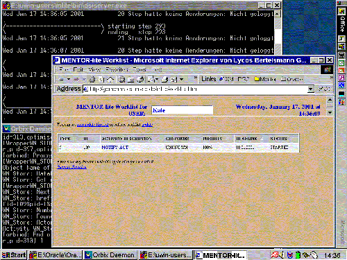

| Previous Step | Next Step |
Worklist Management
Application dependent facilities like worklist management are implemented in Mentor-lite on top of the engine as state and activity charts [1]. Thus, they are interpreted by the workflow engine just like any other workflow specification. This allows us to use the functionality of the Mentor-lite workflow engine through a single interface, namely the state and activity chart interpreter. The activities used in these subworkflows store worklist data and history data in an Oracle database.
 |
| (click on figure to enlarge) |
Worklist management is a key component of workflow management systems that execute complex workflows involving a large number of actors. The major task of worklist management is to assign work items to actors based on a specific assignment strategy, also known as "role resolution". A simple example strategy might be:
Usually, strategies are more complex and implement specific business requirements such as principle of dual control. If a dual control strategy for signing a document is used, it must be guaranteed that two different actors are chosen for two signatures.
It is impossible to model all conceivable assignment strategies in advance. In an enterprise there may exist as many different strategies as workflow types. As we model the assignment strategies as workflows, different strategies can easily be implemented in Mentor-lite. The strategies may depend on various parameters such as workflow type, the organizational structure of the enterprise, the actors' expertise, the actors' load etc.. In Mentor-lite, a library of basic assignment strategies is made available to the workflow designer. By combining basic strategies, complex ones can be implemented. Even building specific strategies from scratch is conveniently supported, as a single specification language for both workflow specifications and assignment strategies is used.
The worklist uses the ubiquitous browser technology as the user's frontend, and so do all interactive activities ...
References
[1] J. Weissenfels, P. Muth, G.Weikum: Flexible Worklist Management in a Light-Weight Workflow Management System, in Proceedings of EDBT Workshop on Workflow Management Systems, Valencia, Spain, 1998.
| Previous Step | Next Step |